À gauche, le tableau tel qu'il figure dans sources/tarif-septembre-2026.pdf, recadré
depuis le rendu à 200 dpi. À droite, la même matière recomposée depuis data/catalogue.json.
Les deux colonnes doivent dire exactement la même chose : appellation, cuvée, couleur, millésime, contenance,
et autant de prix que de paliers. Un point rouge signale une remarque reportée dans QUESTIONS.md.
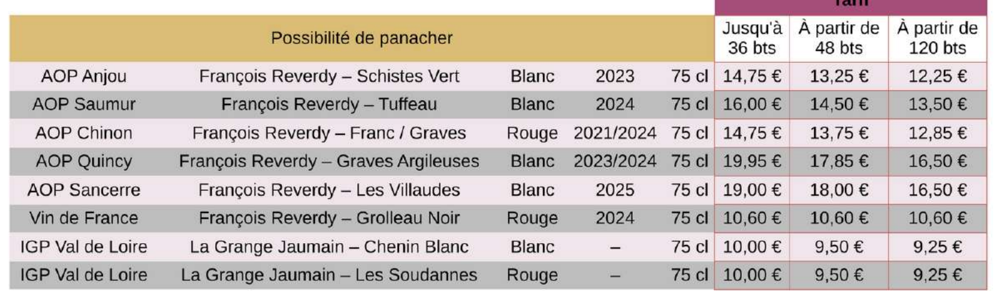
data/catalogue.json| Appellation | Cuvée | Couleur | Millésime | Contenance | Jusqu'à 36 bts | À partir de 48 bts | À partir de 120 bts | |
|---|---|---|---|---|---|---|---|---|
| AOP Anjou | François Reverdy – Schistes Vert | Blanc | 2023 | 75 cl | 14,75 € | 13,25 € | 12,25 € | |
| AOP Saumur | François Reverdy – Tuffeau | Blanc | 2024 | 75 cl | 16,00 € | 14,50 € | 13,50 € | |
| AOP Chinon | François Reverdy – Franc / Graves | Rouge | 2021/2024 | 75 cl | 14,75 € | 13,75 € | 12,85 € | |
| AOP Quincy | François Reverdy – Graves Argileuses | Blanc | 2023/2024 | 75 cl | 19,95 € | 17,85 € | 16,50 € | |
| AOP Sancerre | François Reverdy – Les Villaudes | Blanc | 2025 | 75 cl | 19,00 € | 18,00 € | 16,50 € | |
| Vin de France | François Reverdy – Grolleau Noir | Rouge | 2024 | 75 cl | 10,60 € | 10,60 € | 10,60 € | |
| IGP Val de Loire | La Grange Jaumain – Chenin Blanc | Blanc | — | 75 cl | 10,00 € | 9,50 € | 9,25 € | |
| IGP Val de Loire | La Grange Jaumain – Les Soudannes | Rouge | — | 75 cl | 10,00 € | 9,50 € | 9,25 € |
* Prix de la bouteille H.T. hors frais de transport.
Départements : 35, 44, 49, 53, 56, 85
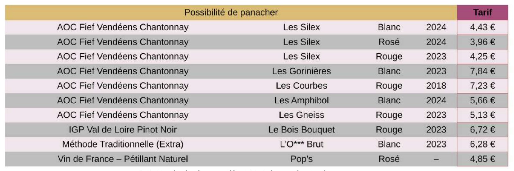
data/catalogue.json| Appellation | Cuvée | Couleur | Millésime | Tarif | |
|---|---|---|---|---|---|
| AOC Fiefs Vendéens Chantonnay | Les Silex | Blanc | 2024 | 4,43 € | |
| AOC Fiefs Vendéens Chantonnay | Les Silex | Rosé | 2024 | 3,96 € | |
| AOC Fiefs Vendéens Chantonnay | Les Silex | Rouge | 2023 | 4,25 € | |
| AOC Fiefs Vendéens Chantonnay | Les Gorinières | Blanc | 2023 | 7,84 € | |
| AOC Fiefs Vendéens Chantonnay | Les Courbes | Rouge | 2018 | 7,23 € | |
| AOC Fiefs Vendéens Chantonnay | Les Amphibol | Blanc | 2024 | 5,66 € | |
| AOC Fiefs Vendéens Chantonnay | Les Gneiss | Rouge | 2023 | 5,13 € | |
| IGP Val de Loire Pinot Noir | Le Bois Bouquet | Rouge | 2023 | 6,72 € | |
| Méthode Traditionnelle (Extra) | L’O*** Brut | Blanc | 2023 | 6,28 € | |
| Vin de France – Pétillant Naturel | Pop’s | Rosé | — | 4,85 € |
* Prix de la bouteille H.T. hors frais de transport.
Départements : 16, 35, 44, 49, 53, 56, 85
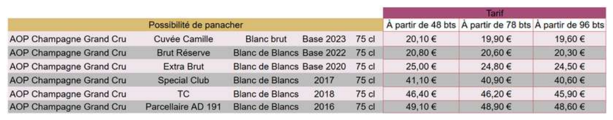
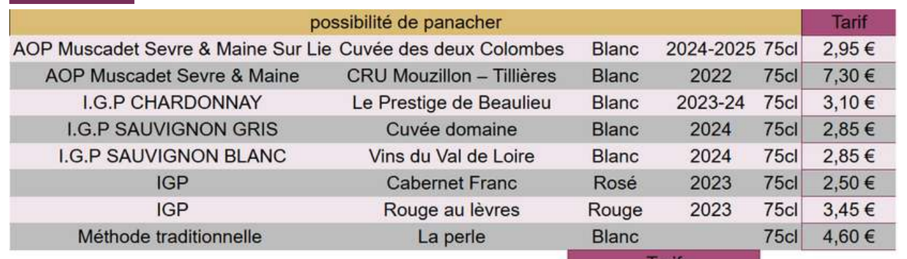
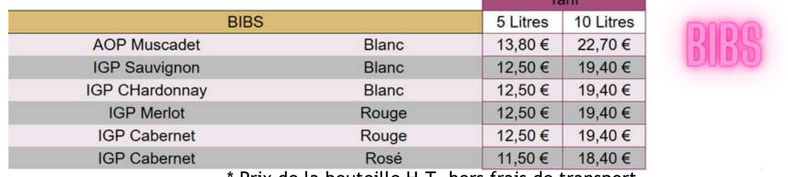
data/catalogue.json| Appellation | Cuvée | Couleur | Millésime | Contenance | Tarif | |
|---|---|---|---|---|---|---|
| AOP Muscadet Sèvre et Maine sur lie | Cuvée des deux Colombes | Blanc | 2024-2025 | 75 cl | 2,95 € | |
| AOP Muscadet Sèvre et Maine | CRU Mouzillon – Tillières | Blanc | 2022 | 75 cl | 7,30 € | |
| IGP Chardonnay | Le Prestige de Beaulieu | Blanc | 2023-24 | 75 cl | 3,10 € | |
| IGP Sauvignon Gris | Cuvée domaine | Blanc | 2024 | 75 cl | 2,85 € | |
| IGP Sauvignon Blanc | Vins du Val de Loire | Blanc | 2024 | 75 cl | 2,85 € | |
| IGP | Cabernet Franc | Rosé | 2023 | 75 cl | 2,50 € | |
| IGP | Rouge au lèvres | Rouge | 2023 | 75 cl | 3,45 € | ● |
| Méthode traditionnelle | La perle | Blanc | — | 75 cl | 4,60 € |
| Appellation | Couleur | 5 Litres | 10 Litres | |
|---|---|---|---|---|
| AOP Muscadet | Blanc | 13,80 € | 22,70 € | |
| IGP Sauvignon | Blanc | 12,50 € | 19,40 € | |
| IGP Chardonnay | Blanc | 12,50 € | 19,40 € | |
| IGP Merlot | Rouge | 12,50 € | 19,40 € | |
| IGP Cabernet | Rouge | 12,50 € | 19,40 € | |
| IGP Cabernet | Rosé | 11,50 € | 18,40 € |
* Prix de la bouteille H.T. hors frais de transport.
Départements : 35, 44, 49, 53, 56, 85
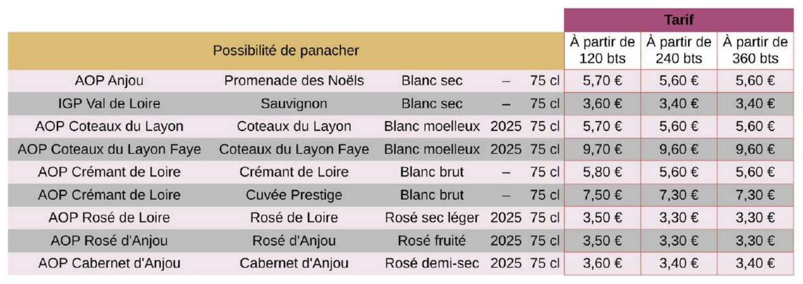
data/catalogue.json| Appellation | Cuvée | Couleur | Millésime | Contenance | À partir de 120 bts | À partir de 240 bts | À partir de 360 bts | |
|---|---|---|---|---|---|---|---|---|
| AOP Anjou | Promenade des Noëls | Blanc sec | — | 75 cl | 5,70 € | 5,60 € | 5,60 € | |
| IGP Val de Loire | Sauvignon | Blanc sec | — | 75 cl | 3,60 € | 3,40 € | 3,40 € | |
| AOP Coteaux du Layon | Coteaux du Layon | Blanc moelleux | 2025 | 75 cl | 5,70 € | 5,60 € | 5,60 € | |
| AOP Coteaux du Layon Faye | Coteaux du Layon Faye | Blanc moelleux | 2025 | 75 cl | 9,70 € | 9,60 € | 9,60 € | |
| AOP Crémant de Loire | Crémant de Loire | Blanc brut | — | 75 cl | 5,80 € | 5,60 € | 5,60 € | |
| AOP Crémant de Loire | Cuvée Prestige | Blanc brut | — | 75 cl | 7,50 € | 7,30 € | 7,30 € | |
| AOP Rosé de Loire | Rosé de Loire | Rosé sec léger | 2025 | 75 cl | 3,50 € | 3,30 € | 3,30 € | |
| AOP Rosé d’Anjou | Rosé d’Anjou | Rosé fruité | 2025 | 75 cl | 3,50 € | 3,30 € | 3,30 € | |
| AOP Cabernet d’Anjou | Cabernet d’Anjou | Rosé demi-sec | 2025 | 75 cl | 3,60 € | 3,40 € | 3,40 € |
* Prix de la bouteille H.T. hors frais de transport.
Départements : 35, 44, 49, 53, 56, 85
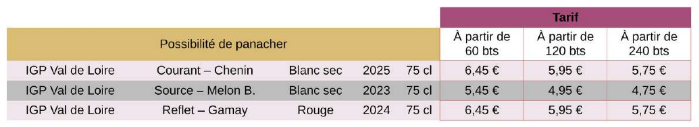
data/catalogue.json| Appellation | Cuvée | Couleur | Millésime | Contenance | À partir de 60 bts | À partir de 120 bts | À partir de 240 bts | |
|---|---|---|---|---|---|---|---|---|
| IGP Val de Loire | Courant – Chenin | Blanc sec | 2025 | 75 cl | 6,45 € | 5,95 € | 5,75 € | |
| IGP Val de Loire | Source – Melon B. | Blanc sec | 2023 | 75 cl | 5,45 € | 4,95 € | 4,75 € | |
| IGP Val de Loire | Reflet – Gamay | Rouge | 2024 | 75 cl | 6,45 € | 5,95 € | 5,75 € |
* Prix de la bouteille H.T. hors frais de transport.
Départements : 35, 44, 49, 53, 56, 85
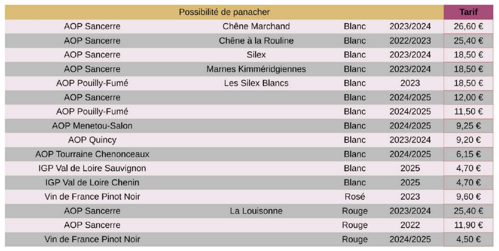
data/catalogue.json| Appellation | Cuvée | Couleur | Millésime | Tarif | |
|---|---|---|---|---|---|
| AOP Sancerre | Chêne Marchand | Blanc | 2023/2024 | 26,60 € | |
| AOP Sancerre | Chêne à la Rouline | Blanc | 2022/2023 | 25,40 € | |
| AOP Sancerre | Silex | Blanc | 2023/2024 | 18,50 € | |
| AOP Sancerre | Marnes Kimméridgiennes | Blanc | 2023/2024 | 18,50 € | |
| AOP Pouilly-Fumé | Les Silex Blancs | Blanc | 2023 | 18,50 € | |
| AOP Sancerre | — | Blanc | 2024/2025 | 12,00 € | |
| AOP Pouilly-Fumé | — | Blanc | 2024/2025 | 11,50 € | |
| AOP Menetou-Salon | — | Blanc | 2024/2025 | 9,25 € | |
| AOP Quincy | — | Blanc | 2023/2024 | 9,20 € | |
| AOP Touraine Chenonceaux | — | Blanc | 2024/2025 | 6,15 € | |
| IGP Val de Loire Sauvignon | — | Blanc | 2025 | 4,70 € | |
| IGP Val de Loire Chenin | — | Blanc | 2025 | 4,70 € | |
| Vin de France Pinot Noir | — | Rosé | 2023 | 9,60 € | |
| AOP Sancerre | La Louisonne | Rouge | 2023/2024 | 25,40 € | |
| AOP Sancerre | — | Rouge | 2022 | 11,90 € | |
| Vin de France Pinot Noir | — | Rouge | 2024/2025 | 4,50 € |
* Prix de la bouteille H.T. hors frais de transport.
Départements : 35, 44, 56, 85
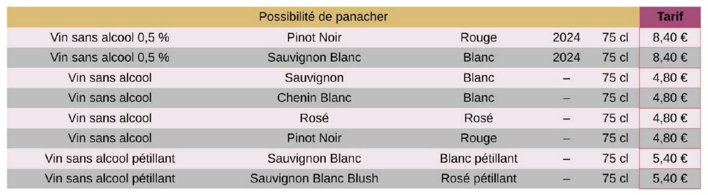
data/catalogue.json| Appellation | Cuvée | Couleur | Millésime | Contenance | Tarif | |
|---|---|---|---|---|---|---|
| Vin sans alcool 0,5 % | Pinot Noir | Rouge | 2024 | 75 cl | 8,40 € | |
| Vin sans alcool 0,5 % | Sauvignon Blanc | Blanc | 2024 | 75 cl | 8,40 € | |
| Vin sans alcool | Sauvignon | Blanc | — | 75 cl | 4,80 € | |
| Vin sans alcool | Chenin Blanc | Blanc | — | 75 cl | 4,80 € | |
| Vin sans alcool | Rosé | Rosé | — | 75 cl | 4,80 € | |
| Vin sans alcool | Pinot Noir | Rouge | — | 75 cl | 4,80 € | |
| Vin sans alcool pétillant | Sauvignon Blanc | Blanc pétillant | — | 75 cl | 5,40 € | |
| Vin sans alcool pétillant | Sauvignon Blanc Blush | Rosé pétillant | — | 75 cl | 5,40 € |
* Prix de la bouteille H.T. hors frais de transport.
Départements : 35, 44, 56, 85
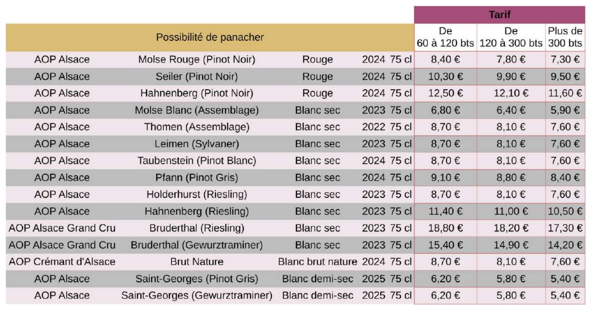
data/catalogue.json| Appellation | Cuvée | Couleur | Millésime | Contenance | De 60 à 120 bts | De 120 à 300 bts | Plus de 300 bts | |
|---|---|---|---|---|---|---|---|---|
| AOP Alsace | Molse Rouge (Pinot Noir) | Rouge | 2024 | 75 cl | 8,40 € | 7,80 € | 7,30 € | |
| AOP Alsace | Seiler (Pinot Noir) | Rouge | 2024 | 75 cl | 10,30 € | 9,90 € | 9,50 € | |
| AOP Alsace | Hahnenberg (Pinot Noir) | Rouge | 2024 | 75 cl | 12,50 € | 12,10 € | 11,60 € | |
| AOP Alsace | Molse Blanc (Assemblage) | Blanc sec | 2023 | 75 cl | 6,80 € | 6,40 € | 5,90 € | |
| AOP Alsace | Thomen (Assemblage) | Blanc sec | 2022 | 75 cl | 8,70 € | 8,10 € | 7,60 € | |
| AOP Alsace | Leimen (Sylvaner) | Blanc sec | 2023 | 75 cl | 8,70 € | 8,10 € | 7,60 € | |
| AOP Alsace | Taubenstein (Pinot Blanc) | Blanc sec | 2024 | 75 cl | 8,70 € | 8,10 € | 7,60 € | |
| AOP Alsace | Pfann (Pinot Gris) | Blanc sec | 2024 | 75 cl | 9,10 € | 8,80 € | 8,40 € | |
| AOP Alsace | Holderhurst (Riesling) | Blanc sec | 2023 | 75 cl | 8,70 € | 8,10 € | 7,60 € | |
| AOP Alsace | Hahnenberg (Riesling) | Blanc sec | 2023 | 75 cl | 11,40 € | 11,00 € | 10,50 € | |
| AOP Alsace Grand Cru | Bruderthal (Riesling) | Blanc sec | 2023 | 75 cl | 18,80 € | 18,20 € | 17,30 € | |
| AOP Alsace Grand Cru | Bruderthal (Gewurztraminer) | Blanc sec | 2023 | 75 cl | 15,40 € | 14,90 € | 14,20 € | |
| AOP Crémant d’Alsace | Brut Nature | Blanc brut nature | 2024 | 75 cl | 8,70 € | 8,10 € | 7,60 € | |
| AOP Alsace | Saint-Georges (Pinot Gris) | Blanc demi-sec | 2025 | 75 cl | 6,20 € | 5,80 € | 5,40 € | |
| AOP Alsace | Saint-Georges (Gewurztraminer) | Blanc demi-sec | 2025 | 75 cl | 6,20 € | 5,80 € | 5,40 € |
aucune note de prix dans la source
Départements : aucun dans la source
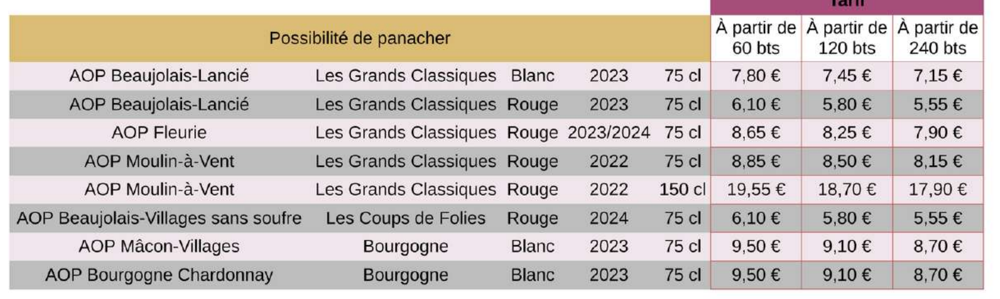
data/catalogue.json| Appellation | Cuvée | Couleur | Millésime | Contenance | À partir de 60 bts | À partir de 120 bts | À partir de 240 bts | |
|---|---|---|---|---|---|---|---|---|
| AOP Beaujolais-Lancié | Les Grands Classiques | Blanc | 2023 | 75 cl | 7,80 € | 7,45 € | 7,15 € | |
| AOP Beaujolais-Lancié | Les Grands Classiques | Rouge | 2023 | 75 cl | 6,10 € | 5,80 € | 5,55 € | |
| AOP Fleurie | Les Grands Classiques | Rouge | 2023/2024 | 75 cl | 8,65 € | 8,25 € | 7,90 € | |
| AOP Moulin-à-Vent | Les Grands Classiques | Rouge | 2022 | 75 cl | 8,85 € | 8,50 € | 8,15 € | |
| AOP Moulin-à-Vent | Les Grands Classiques | Rouge | 2022 | 150 cl | 19,55 € | 18,70 € | 17,90 € | |
| AOP Beaujolais-Villages sans soufre | Les Coups de Folies | Rouge | 2024 | 75 cl | 6,10 € | 5,80 € | 5,55 € | |
| AOP Mâcon-Villages | Bourgogne | Blanc | 2023 | 75 cl | 9,50 € | 9,10 € | 8,70 € | |
| AOP Bourgogne Chardonnay | Bourgogne | Blanc | 2023 | 75 cl | 9,50 € | 9,10 € | 8,70 € |
* Prix de la bouteille H.T. hors frais de transport.
Départements : 35, 44, 49, 53, 56, 85
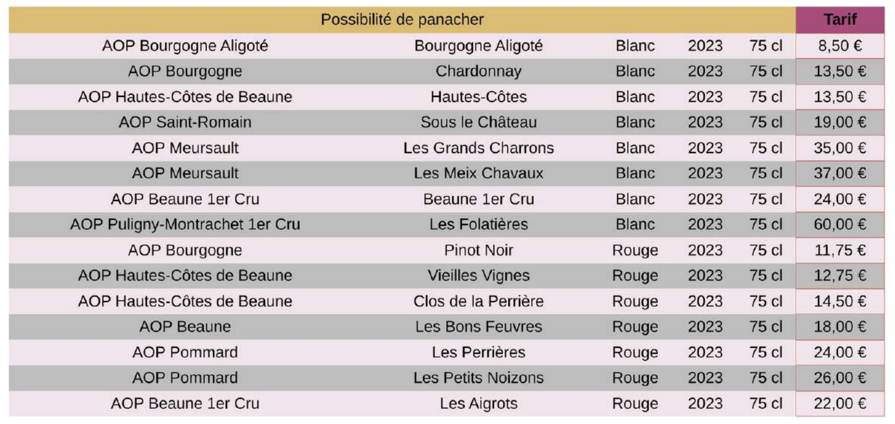
data/catalogue.json| Appellation | Cuvée | Couleur | Millésime | Contenance | Tarif | |
|---|---|---|---|---|---|---|
| AOP Bourgogne Aligoté | Bourgogne Aligoté | Blanc | 2023 | 75 cl | 8,50 € | |
| AOP Bourgogne | Chardonnay | Blanc | 2023 | 75 cl | 13,50 € | |
| AOP Hautes-Côtes de Beaune | Hautes-Côtes | Blanc | 2023 | 75 cl | 13,50 € | |
| AOP Saint-Romain | Sous le Château | Blanc | 2023 | 75 cl | 19,00 € | |
| AOP Meursault | Les Grands Charrons | Blanc | 2023 | 75 cl | 35,00 € | |
| AOP Meursault | Les Meix Chavaux | Blanc | 2023 | 75 cl | 37,00 € | |
| AOP Beaune 1er Cru | Beaune 1er Cru | Blanc | 2023 | 75 cl | 24,00 € | |
| AOP Puligny-Montrachet 1er Cru | Les Folatières | Blanc | 2023 | 75 cl | 60,00 € | |
| AOP Bourgogne | Pinot Noir | Rouge | 2023 | 75 cl | 11,75 € | |
| AOP Hautes-Côtes de Beaune | Vieilles Vignes | Rouge | 2023 | 75 cl | 12,75 € | |
| AOP Hautes-Côtes de Beaune | Clos de la Perrière | Rouge | 2023 | 75 cl | 14,50 € | |
| AOP Beaune | Les Bons Feuvres | Rouge | 2023 | 75 cl | 18,00 € | |
| AOP Pommard | Les Perrières | Rouge | 2023 | 75 cl | 24,00 € | |
| AOP Pommard | Les Petits Noizons | Rouge | 2023 | 75 cl | 26,00 € | |
| AOP Beaune 1er Cru | Les Aigrots | Rouge | 2023 | 75 cl | 22,00 € |
* Prix de la bouteille H.T. hors frais de transport.
Départements : 35, 44, 49, 53, 56, 85
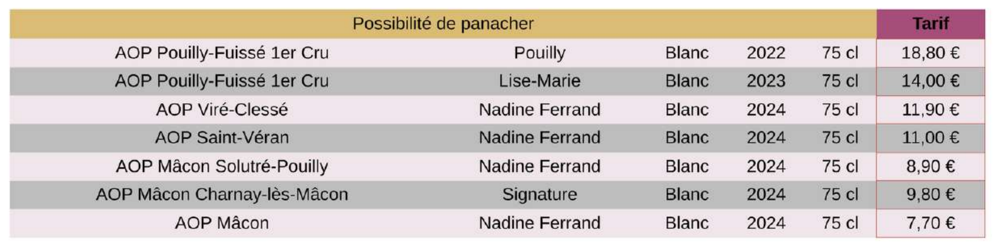
data/catalogue.json| Appellation | Cuvée | Couleur | Millésime | Contenance | Tarif | |
|---|---|---|---|---|---|---|
| AOP Pouilly-Fuissé 1er Cru | Pouilly | Blanc | 2022 | 75 cl | 18,80 € | |
| AOP Pouilly-Fuissé 1er Cru | Lise-Marie | Blanc | 2023 | 75 cl | 14,00 € | |
| AOP Viré-Clessé | Nadine Ferrand | Blanc | 2024 | 75 cl | 11,90 € | |
| AOP Saint-Véran | Nadine Ferrand | Blanc | 2024 | 75 cl | 11,00 € | |
| AOP Mâcon Solutré-Pouilly | Nadine Ferrand | Blanc | 2024 | 75 cl | 8,90 € | |
| AOP Mâcon Charnay-lès-Mâcon | Signature | Blanc | 2024 | 75 cl | 9,80 € | |
| AOP Mâcon | Nadine Ferrand | Blanc | 2024 | 75 cl | 7,70 € |
* Prix de la bouteille H.T. hors frais de transport.
Départements : 44, 85
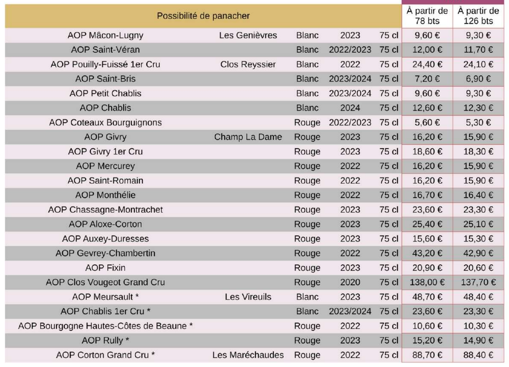
data/catalogue.json| Appellation | Cuvée | Couleur | Millésime | Contenance | À partir de 78 bts | À partir de 126 bts | |
|---|---|---|---|---|---|---|---|
| AOP Mâcon-Lugny | Les Genièvres | Blanc | 2023 | 75 cl | 9,60 € | 9,30 € | |
| AOP Saint-Véran | — | Blanc | 2022/2023 | 75 cl | 12,00 € | 11,70 € | |
| AOP Pouilly-Fuissé 1er Cru | Clos Reyssier | Blanc | 2022 | 75 cl | 24,40 € | 24,10 € | |
| AOP Saint-Bris | — | Blanc | 2023/2024 | 75 cl | 7,20 € | 6,90 € | |
| AOP Petit Chablis | — | Blanc | 2023/2024 | 75 cl | 9,60 € | 9,30 € | |
| AOP Chablis | — | Blanc | 2024 | 75 cl | 12,60 € | 12,30 € | |
| AOP Coteaux Bourguignons | — | Rouge | 2022/2023 | 75 cl | 5,60 € | 5,30 € | |
| AOP Givry | Champ La Dame | Rouge | 2023 | 75 cl | 16,20 € | 15,90 € | |
| AOP Givry 1er Cru | — | Rouge | 2023 | 75 cl | 18,60 € | 18,30 € | |
| AOP Mercurey | — | Rouge | 2022 | 75 cl | 16,20 € | 15,90 € | |
| AOP Saint-Romain | — | Rouge | 2022 | 75 cl | 16,20 € | 15,90 € | |
| AOP Monthélie | — | Rouge | 2022 | 75 cl | 16,70 € | 16,40 € | |
| AOP Chassagne-Montrachet | — | Rouge | 2023 | 75 cl | 23,60 € | 23,30 € | |
| AOP Aloxe-Corton | — | Rouge | 2023 | 75 cl | 25,40 € | 25,10 € | |
| AOP Auxey-Duresses | — | Rouge | 2023 | 75 cl | 15,60 € | 15,30 € | |
| AOP Gevrey-Chambertin | — | Rouge | 2022 | 75 cl | 43,20 € | 42,90 € | |
| AOP Fixin | — | Rouge | 2023 | 75 cl | 20,90 € | 20,60 € | |
| AOP Clos Vougeot Grand Cru | — | Rouge | 2020 | 75 cl | 138,00 € | 137,70 € | |
| AOP Meursault | Les Vireuils | Blanc | 2023 | 75 cl | 48,70 € | 48,40 € | ● |
| AOP Chablis 1er Cru | — | Blanc | 2023/2024 | 75 cl | 23,60 € | 23,30 € | ● |
| AOP Bourgogne Hautes-Côtes de Beaune | — | Rouge | 2022 | 75 cl | 10,60 € | 10,30 € | ● |
| AOP Rully | — | Rouge | 2023 | 75 cl | 15,20 € | 14,90 € | ● |
| AOP Corton Grand Cru | Les Maréchaudes | Rouge | 2022 | 75 cl | 88,70 € | 88,40 € | ● |
* Prix de la bouteille H.T. franco de port
Départements : 35, 44, 49, 53, 56, 85
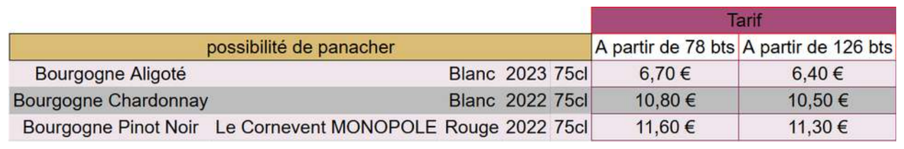
data/catalogue.json| Appellation | Cuvée | Couleur | Millésime | Contenance | À partir de 78 bts | À partir de 126 bts | |
|---|---|---|---|---|---|---|---|
| Bourgogne Aligoté | — | Blanc | 2023 | 75 cl | 6,70 € | 6,40 € | |
| Bourgogne Chardonnay | — | Blanc | 2022 | 75 cl | 10,80 € | 10,50 € | |
| Bourgogne Pinot Noir | Le Cornevent MONOPOLE | Rouge | 2022 | 75 cl | 11,60 € | 11,30 € |
* Prix de la bouteille H.T. Franco de port.
Départements : 35, 44, 49, 53, 56, 85
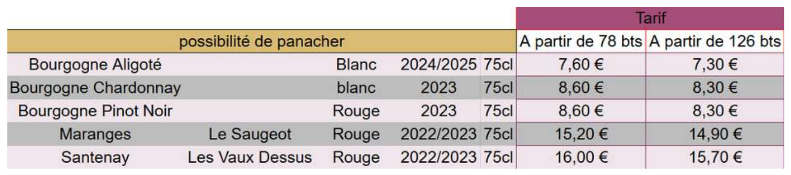
data/catalogue.json| Appellation | Cuvée | Couleur | Millésime | Contenance | À partir de 78 bts | À partir de 126 bts | |
|---|---|---|---|---|---|---|---|
| Bourgogne Aligoté | — | Blanc | 2024/2025 | 75 cl | 7,60 € | 7,30 € | |
| Bourgogne Chardonnay | — | Blanc | 2023 | 75 cl | 8,60 € | 8,30 € | |
| Bourgogne Pinot Noir | — | Rouge | 2023 | 75 cl | 8,60 € | 8,30 € | |
| Maranges | Le Saugeot | Rouge | 2022/2023 | 75 cl | 15,20 € | 14,90 € | |
| Santenay | Les Vaux Dessus | Rouge | 2022/2023 | 75 cl | 16,00 € | 15,70 € |
Prix de la bouteille H.T. Franco de port.
Départements : 35, 44, 49, 56, 85
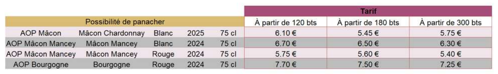
data/catalogue.json| Appellation | Cuvée | Couleur | Millésime | Contenance | À partir de 120 bts | À partir de 180 bts | À partir de 300 bts | |
|---|---|---|---|---|---|---|---|---|
| AOP Mâcon | Mâcon Chardonnay | Blanc | 2025 | 75 cl | 6,10 € | 5,45 € | 5,75 € | ● |
| AOP Mâcon Mancey | Mâcon Mancey | Blanc | 2024 | 75 cl | 6,70 € | 6,50 € | 6,30 € | |
| AOP Mâcon Mancey | Mâcon Mancey | Rouge | 2024 | 75 cl | 5,75 € | 5,60 € | 5,40 € | |
| AOP Bourgogne | Bourgogne | Rouge | 2024 | 75 cl | 7,70 € | 7,50 € | 7,25 € |
* Prix de la bouteille H.T. départ chai.
Départements : 35, 44, 49, 53, 56, 85
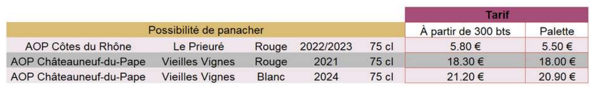
data/catalogue.json| Appellation | Cuvée | Couleur | Millésime | Contenance | À partir de 300 bts | Palette | |
|---|---|---|---|---|---|---|---|
| AOP Côtes du Rhône | Le Prieuré | Rouge | 2022/2023 | 75 cl | 5,80 € | 5,50 € | |
| AOP Châteauneuf-du-Pape | Vieilles Vignes | Rouge | 2021 | 75 cl | 18,30 € | 18,00 € | |
| AOP Châteauneuf-du-Pape | Vieilles Vignes | Blanc | 2024 | 75 cl | 21,20 € | 20,90 € |
* Prix de la bouteille H.T. hors frais de transport.
Départements : 35, 44, 49, 53, 56, 85
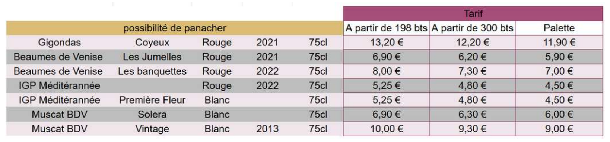
data/catalogue.json| Appellation | Cuvée | Couleur | Millésime | Contenance | À partir de 198 bts | À partir de 300 bts | Palette | |
|---|---|---|---|---|---|---|---|---|
| Gigondas | Coyeux | Rouge | 2021 | 75 cl | 13,20 € | 12,20 € | 11,90 € | |
| Beaumes de Venise | Les Jumelles | Rouge | 2021 | 75 cl | 6,90 € | 6,20 € | 5,90 € | |
| Beaumes de Venise | Les banquettes | Rouge | 2022 | 75 cl | 8,00 € | 7,30 € | 7,00 € | |
| IGP Méditerranée | — | Rouge | 2022 | 75 cl | 5,25 € | 4,80 € | 4,50 € | |
| IGP Méditerranée | Première Fleur | Blanc | — | 75 cl | 5,25 € | 4,80 € | 4,50 € | |
| Muscat BDV | Solera | Blanc | — | 75 cl | 6,90 € | 6,30 € | 6,00 € | |
| Muscat BDV | Vintage | Blanc | 2013 | 75 cl | 10,00 € | 9,30 € | 9,00 € |
* Prix de la bouteille H.T. hors frais de transport.
Départements : 35, 44, 49, 53, 56, 85
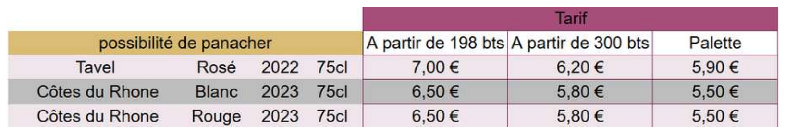
data/catalogue.json| Appellation | Couleur | Millésime | Contenance | À partir de 198 bts | À partir de 300 bts | Palette | |
|---|---|---|---|---|---|---|---|
| Tavel | Rosé | 2022 | 75 cl | 7,00 € | 6,20 € | 5,90 € | |
| Côtes du Rhône | Blanc | 2023 | 75 cl | 6,50 € | 5,80 € | 5,50 € | |
| Côtes du Rhône | Rouge | 2023 | 75 cl | 6,50 € | 5,80 € | 5,50 € |
* Prix de la bouteille H.T. hors frais de transport.
Départements : 35, 44, 49, 53, 56, 85
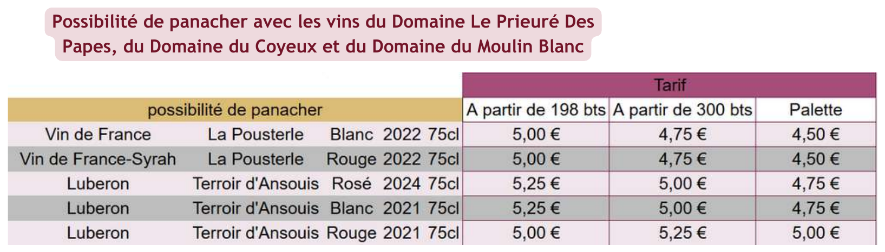
data/catalogue.json| Appellation | Cuvée | Couleur | Millésime | Contenance | À partir de 198 bts | À partir de 300 bts | Palette | |
|---|---|---|---|---|---|---|---|---|
| Vin de France | La Pousterle | Blanc | 2022 | 75 cl | 5,00 € | 4,75 € | 4,50 € | |
| Vin de France-Syrah | La Pousterle | Rouge | 2022 | 75 cl | 5,00 € | 4,75 € | 4,50 € | |
| Luberon | Terroir d'Ansouis | Rosé | 2024 | 75 cl | 5,25 € | 5,00 € | 4,75 € | |
| Luberon | Terroir d'Ansouis | Blanc | 2021 | 75 cl | 5,25 € | 5,00 € | 4,75 € | |
| Luberon | Terroir d'Ansouis | Rouge | 2021 | 75 cl | 5,00 € | 5,25 € | 5,00 € | ● |
* Prix de la bouteille H.T. hors frais de transport.
Départements : 35, 44, 49, 53, 56, 85
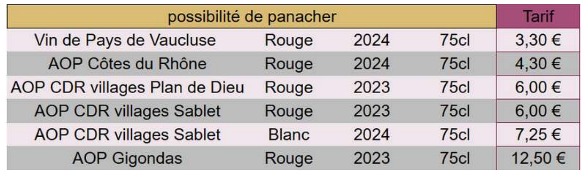
data/catalogue.json| Appellation | Couleur | Millésime | Contenance | Tarif | |
|---|---|---|---|---|---|
| Vin de Pays de Vaucluse | Rouge | 2024 | 75 cl | 3,30 € | |
| AOP Côtes du Rhône | Rouge | 2024 | 75 cl | 4,30 € | |
| AOP CDR villages Plan de Dieu | Rouge | 2023 | 75 cl | 6,00 € | |
| AOP CDR villages Sablet | Rouge | 2023 | 75 cl | 6,00 € | |
| AOP CDR villages Sablet | Blanc | 2024 | 75 cl | 7,25 € | |
| AOP Gigondas | Rouge | 2023 | 75 cl | 12,50 € |
* Prix de la bouteille H.T. hors frais de transport.
Départements : 35, 44, 49, 53, 56, 85
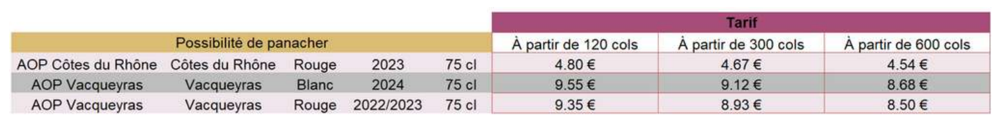
data/catalogue.json| Appellation | Cuvée | Couleur | Millésime | Contenance | À partir de 120 cols | À partir de 300 cols | À partir de 600 cols | |
|---|---|---|---|---|---|---|---|---|
| AOP Côtes du Rhône | Côtes du Rhône | Rouge | 2023 | 75 cl | 4,80 € | 4,67 € | 4,54 € | |
| AOP Vacqueyras | Vacqueyras | Blanc | 2024 | 75 cl | 9,55 € | 9,12 € | 8,68 € | |
| AOP Vacqueyras | Vacqueyras | Rouge | 2022/2023 | 75 cl | 9,35 € | 8,93 € | 8,50 € |
* Prix de la bouteille H.T. départ cave.
Départements : 35, 44, 49, 53, 56, 85
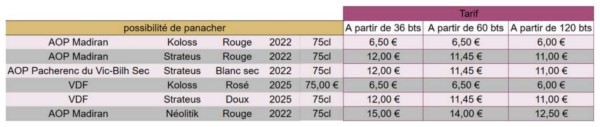
data/catalogue.json| Appellation | Cuvée | Couleur | Millésime | Contenance | À partir de 36 bts | À partir de 60 bts | À partir de 120 bts | |
|---|---|---|---|---|---|---|---|---|
| AOP Madiran | Koloss | Rouge | 2022 | 75 cl | 6,50 € | 6,50 € | 6,00 € | |
| AOP Madiran | Strateus | Rouge | 2022 | 75 cl | 12,00 € | 11,45 € | 11,00 € | |
| AOP Pacherenc du Vic-Bilh Sec | Strateus | Blanc sec | 2022 | 75 cl | 12,00 € | 11,45 € | 11,00 € | |
| VDF | Koloss | Rosé | 2025 | 75 cl | 6,50 € | 6,50 € | 6,00 € | ● |
| VDF | Strateus | Doux | 2025 | 75 cl | 12,00 € | 11,45 € | 11,00 € | |
| AOP Madiran | Néolitik | Rouge | 2022 | 75 cl | 15,00 € | 14,00 € | 12,50 € |
* Prix de la bouteille H.T. Franco de port.
Départements : 35, 44, 49, 53, 56, 85
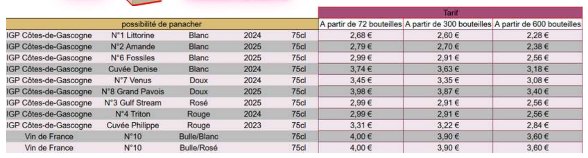
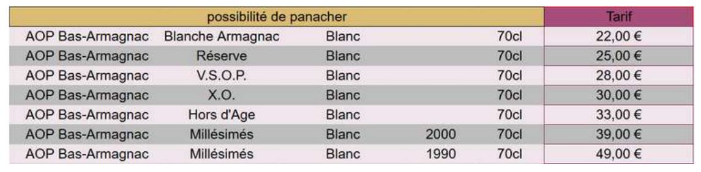
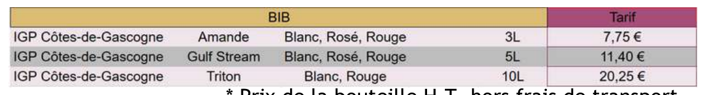
data/catalogue.json| Appellation | Cuvée | Couleur | Millésime | Contenance | À partir de 72 bouteilles | À partir de 300 bouteilles | À partir de 600 bouteilles | |
|---|---|---|---|---|---|---|---|---|
| IGP Côtes-de-Gascogne | N°1 Littorine | Blanc | 2024 | 75 cl | 2,68 € | 2,60 € | 2,28 € | |
| IGP Côtes-de-Gascogne | N°2 Amande | Blanc | 2025 | 75 cl | 2,79 € | 2,70 € | 2,38 € | |
| IGP Côtes-de-Gascogne | N°6 Fossiles | Blanc | 2025 | 75 cl | 2,99 € | 2,91 € | 2,56 € | |
| IGP Côtes-de-Gascogne | Cuvée Denise | Blanc | 2024 | 75 cl | 3,74 € | 3,63 € | 3,18 € | |
| IGP Côtes-de-Gascogne | N°7 Venus | Doux | 2024 | 75 cl | 3,45 € | 3,35 € | 3,08 € | |
| IGP Côtes-de-Gascogne | N°8 Grand Pavois | Doux | 2025 | 75 cl | 3,98 € | 3,87 € | 3,40 € | |
| IGP Côtes-de-Gascogne | N°3 Gulf Stream | Rosé | 2025 | 75 cl | 2,99 € | 2,91 € | 2,56 € | |
| IGP Côtes-de-Gascogne | N°4 Triton | Rouge | 2024 | 75 cl | 2,99 € | 2,91 € | 2,56 € | |
| IGP Côtes-de-Gascogne | Cuvée Philippe | Rouge | 2023 | 75 cl | 3,31 € | 3,22 € | 2,84 € | |
| Vin de France | N°10 | Bulle/Blanc | — | 75 cl | 4,00 € | 3,90 € | 3,60 € | |
| Vin de France | N°10 | Bulle/Rosé | — | 75 cl | 4,00 € | 3,90 € | 3,60 € |
| Appellation | Cuvée | Couleur | Millésime | Contenance | Tarif | |
|---|---|---|---|---|---|---|
| AOP Bas-Armagnac | Blanche Armagnac | Blanc | — | 70 cl | 22,00 € | |
| AOP Bas-Armagnac | Réserve | Blanc | — | 70 cl | 25,00 € | |
| AOP Bas-Armagnac | V.S.O.P. | Blanc | — | 70 cl | 28,00 € | |
| AOP Bas-Armagnac | X.O. | Blanc | — | 70 cl | 30,00 € | |
| AOP Bas-Armagnac | Hors d'Age | Blanc | — | 70 cl | 33,00 € | |
| AOP Bas-Armagnac | Millésimés | Blanc | 2000 | 70 cl | 39,00 € | |
| AOP Bas-Armagnac | Millésimés | Blanc | 1990 | 70 cl | 49,00 € |
| Appellation | Cuvée | Couleur | Contenance | Tarif | |
|---|---|---|---|---|---|
| IGP Côtes-de-Gascogne | Amande | Blanc, Rosé, Rouge | 3 L | 7,75 € | |
| IGP Côtes-de-Gascogne | Gulf Stream | Blanc, Rosé, Rouge | 5 L | 11,40 € | |
| IGP Côtes-de-Gascogne | Triton | Blanc, Rouge | 10 L | 20,25 € |
* Prix de la bouteille H.T. hors frais de transport.
Départements : 16, 17, 44, 79, 85
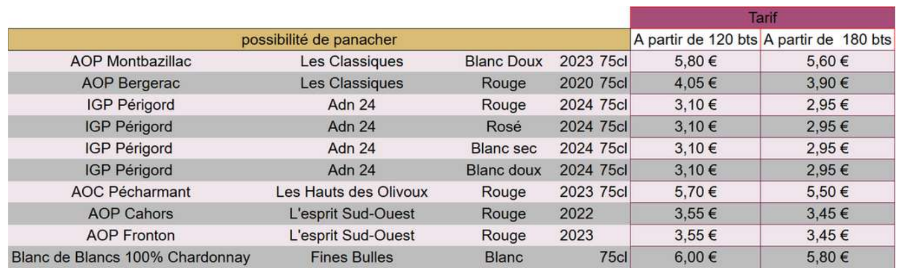
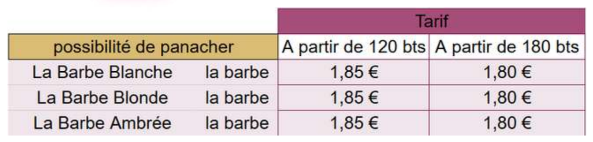
data/catalogue.json| Appellation | Cuvée | Couleur | Millésime | Contenance | À partir de 120 bts | À partir de 180 bts | |
|---|---|---|---|---|---|---|---|
| AOP Monbazillac | Les Classiques | Blanc Doux | 2023 | 75 cl | 5,80 € | 5,60 € | |
| AOP Bergerac | Les Classiques | Rouge | 2020 | 75 cl | 4,05 € | 3,90 € | |
| IGP Périgord | Adn 24 | Rouge | 2024 | 75 cl | 3,10 € | 2,95 € | |
| IGP Périgord | Adn 24 | Rosé | 2024 | 75 cl | 3,10 € | 2,95 € | |
| IGP Périgord | Adn 24 | Blanc sec | 2024 | 75 cl | 3,10 € | 2,95 € | |
| IGP Périgord | Adn 24 | Blanc doux | 2024 | 75 cl | 3,10 € | 2,95 € | |
| AOC Pécharmant | Les Hauts des Olivoux | Rouge | 2023 | 75 cl | 5,70 € | 5,50 € | |
| AOP Cahors | L'esprit Sud-Ouest | Rouge | 2022 | — | 3,55 € | 3,45 € | |
| AOP Fronton | L'esprit Sud-Ouest | Rouge | 2023 | — | 3,55 € | 3,45 € | |
| Blanc de Blancs 100% Chardonnay | Fines Bulles | Blanc | — | 75 cl | 6,00 € | 5,80 € |
| Appellation | Cuvée | À partir de 120 bts | À partir de 180 bts | |
|---|---|---|---|---|
| La Barbe Blanche | la barbe | 1,85 € | 1,80 € | |
| La Barbe Blonde | la barbe | 1,85 € | 1,80 € | |
| La Barbe Ambrée | la barbe | 1,85 € | 1,80 € |
* Prix de la bouteille H.T. hors frais de transport.
Départements : 35, 44, 49, 53, 56, 85
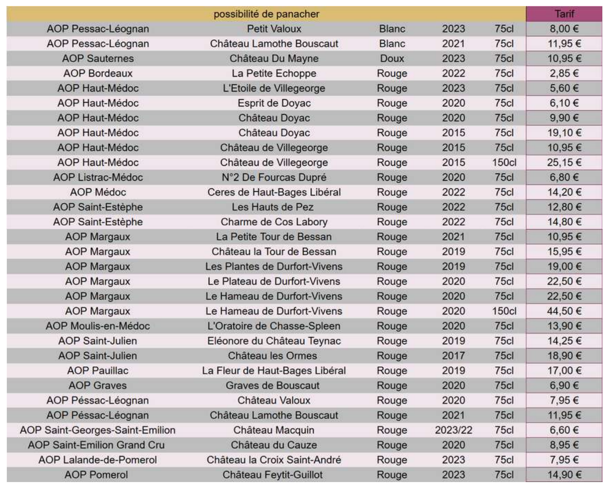
data/catalogue.json| Appellation | Cuvée | Couleur | Millésime | Contenance | Tarif | |
|---|---|---|---|---|---|---|
| AOP Pessac-Léognan | Petit Valoux | Blanc | 2023 | 75 cl | 8,00 € | |
| AOP Pessac-Léognan | Château Lamothe Bouscaut | Blanc | 2021 | 75 cl | 11,95 € | |
| AOP Sauternes | Château Du Mayne | Doux | 2023 | 75 cl | 10,95 € | |
| AOP Bordeaux | La Petite Echoppe | Rouge | 2022 | 75 cl | 2,85 € | |
| AOP Haut-Médoc | L'Etoile de Villegeorge | Rouge | 2023 | 75 cl | 5,60 € | |
| AOP Haut-Médoc | Esprit de Doyac | Rouge | 2020 | 75 cl | 6,10 € | |
| AOP Haut-Médoc | Château Doyac | Rouge | 2020 | 75 cl | 9,90 € | |
| AOP Haut-Médoc | Château Doyac | Rouge | 2015 | 75 cl | 19,10 € | |
| AOP Haut-Médoc | Château de Villegeorge | Rouge | 2015 | 75 cl | 10,95 € | |
| AOP Haut-Médoc | Château de Villegeorge | Rouge | 2015 | 150 cl | 25,15 € | |
| AOP Listrac-Médoc | N°2 De Fourcas Dupré | Rouge | 2020 | 75 cl | 6,80 € | |
| AOP Médoc | Ceres de Haut-Bages Libéral | Rouge | 2022 | 75 cl | 14,20 € | |
| AOP Saint-Estèphe | Les Hauts de Pez | Rouge | 2022 | 75 cl | 12,80 € | |
| AOP Saint-Estèphe | Charme de Cos Labory | Rouge | 2022 | 75 cl | 14,80 € | |
| AOP Margaux | La Petite Tour de Bessan | Rouge | 2021 | 75 cl | 10,95 € | |
| AOP Margaux | Château la Tour de Bessan | Rouge | 2019 | 75 cl | 15,95 € | |
| AOP Margaux | Les Plantes de Durfort-Vivens | Rouge | 2019 | 75 cl | 19,00 € | |
| AOP Margaux | Le Plateau de Durfort-Vivens | Rouge | 2020 | 75 cl | 22,50 € | |
| AOP Margaux | Le Hameau de Durfort-Vivens | Rouge | 2020 | 75 cl | 22,50 € | |
| AOP Margaux | Le Hameau de Durfort-Vivens | Rouge | 2020 | 150 cl | 44,50 € | |
| AOP Moulis-en-Médoc | L'Oratoire de Chasse-Spleen | Rouge | 2020 | 75 cl | 13,90 € | |
| AOP Saint-Julien | Eléonore du Château Teynac | Rouge | 2019 | 75 cl | 14,25 € | |
| AOP Saint-Julien | Château les Ormes | Rouge | 2017 | 75 cl | 18,90 € | |
| AOP Pauillac | La Fleur de Haut-Bages Libéral | Rouge | 2019 | 75 cl | 17,00 € | |
| AOP Graves | Graves de Bouscaut | Rouge | 2020 | 75 cl | 6,90 € | |
| AOP Pessac-Léognan | Château Valoux | Rouge | 2020 | 75 cl | 7,95 € | |
| AOP Pessac-Léognan | Château Lamothe Bouscaut | Rouge | 2021 | 75 cl | 11,95 € | |
| AOP Saint-Georges-Saint-Emilion | Château Macquin | Rouge | 2023/22 | 75 cl | 6,60 € | |
| AOP Saint-Emilion Grand Cru | Château du Cauze | Rouge | 2020 | 75 cl | 8,95 € | |
| AOP Lalande-de-Pomerol | Château la Croix Saint-André | Rouge | 2023 | 75 cl | 7,95 € | |
| AOP Pomerol | Château Feytit-Guillot | Rouge | 2023 | 75 cl | 14,90 € |
* Demander le tarif et offre.
Départements : 35, 49, 85
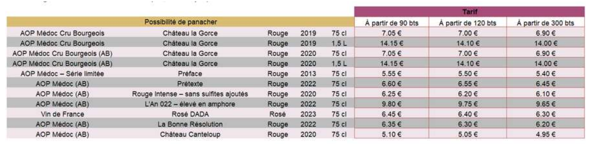
data/catalogue.json| Appellation | Cuvée | Couleur | Millésime | Contenance | À partir de 90 bts | À partir de 120 bts | À partir de 300 bts | |
|---|---|---|---|---|---|---|---|---|
| AOP Médoc Cru Bourgeois | Château la Gorce | Rouge | 2019 | 75 cl | 7,05 € | 7,00 € | 6,90 € | |
| AOP Médoc Cru Bourgeois | Château la Gorce | Rouge | 2019 | 1,5 L | 14,15 € | 14,10 € | 14,00 € | |
| AOP Médoc Cru Bourgeois (AB) | Château la Gorce | Rouge | 2020 | 75 cl | 7,05 € | 7,00 € | 6,90 € | |
| AOP Médoc Cru Bourgeois (AB) | Château la Gorce | Rouge | 2020 | 1,5 L | 14,15 € | 14,10 € | 14,00 € | |
| AOP Médoc – Série limitée | Préface | Rouge | 2013 | 75 cl | 5,55 € | 5,50 € | 5,40 € | |
| AOP Médoc (AB) | Prétexte | Rouge | 2022 | 75 cl | 6,60 € | 6,55 € | 6,45 € | |
| AOP Médoc (AB) | Rouge Intense – sans sulfites ajoutés | Rouge | 2020 | 75 cl | 6,25 € | 6,20 € | 6,10 € | |
| AOP Médoc (AB) | L'An 022 – élevé en amphore | Rouge | 2022 | 75 cl | 9,80 € | 9,75 € | 9,65 € | |
| Vin de France | Rosé DADA | Rosé | 2023 | 75 cl | 6,45 € | 6,40 € | 6,30 € | |
| AOP Médoc (AB) | La Bonne Résolution | Rouge | 2022 | 75 cl | 6,35 € | 6,30 € | 6,20 € | |
| AOP Médoc (AB) | Château Canteloup | Rouge | 2020 | 75 cl | 5,10 € | 5,05 € | 4,95 € |
* Prix de la bouteille H.T. franco de port.
Départements : 35, 44, 49, 53, 56, 85
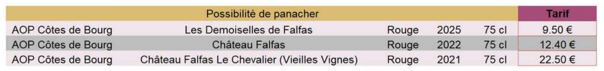
data/catalogue.json| Appellation | Cuvée | Couleur | Millésime | Contenance | Tarif | |
|---|---|---|---|---|---|---|
| AOP Côtes de Bourg | Les Demoiselles de Falfas | Rouge | 2025 | 75 cl | 9,50 € | |
| AOP Côtes de Bourg | Château Falfas | Rouge | 2022 | 75 cl | 12,40 € | |
| AOP Côtes de Bourg | Château Falfas Le Chevalier (Vieilles Vignes) | Rouge | 2021 | 75 cl | 22,50 € |
* Prix de la bouteille H.T. hors frais de transport.
Départements : 35, 44, 49, 53, 56, 85
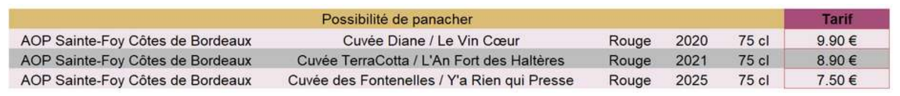
data/catalogue.json| Appellation | Cuvée | Couleur | Millésime | Contenance | Tarif | |
|---|---|---|---|---|---|---|
| AOP Sainte-Foy Côtes de Bordeaux | Cuvée Diane / Le Vin Cœur | Rouge | 2020 | 75 cl | 9,90 € | |
| AOP Sainte-Foy Côtes de Bordeaux | Cuvée TerraCotta / L'An Fort des Haltères | Rouge | 2021 | 75 cl | 8,90 € | |
| AOP Sainte-Foy Côtes de Bordeaux | Cuvée des Fontenelles / Y'a Rien qui Presse | Rouge | 2025 | 75 cl | 7,50 € |
* Prix de la bouteille H.T. départ chai.
Départements : 35, 44, 49, 53, 56, 85
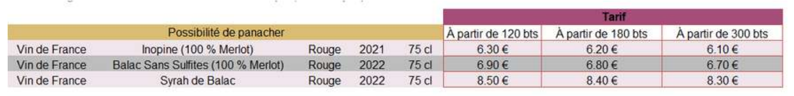
data/catalogue.json| Appellation | Cuvée | Couleur | Millésime | Contenance | À partir de 120 bts | À partir de 180 bts | À partir de 300 bts | |
|---|---|---|---|---|---|---|---|---|
| Vin de France | Inopine (100 % Merlot) | Rouge | 2021 | 75 cl | 6,30 € | 6,20 € | 6,10 € | |
| Vin de France | Balac Sans Sulfites (100 % Merlot) | Rouge | 2022 | 75 cl | 6,90 € | 6,80 € | 6,70 € | |
| Vin de France | Syrah de Balac | Rouge | 2022 | 75 cl | 8,50 € | 8,40 € | 8,30 € |
* Prix de la bouteille H.T. hors frais de transport.
Départements : 35, 44, 49, 53, 56, 85
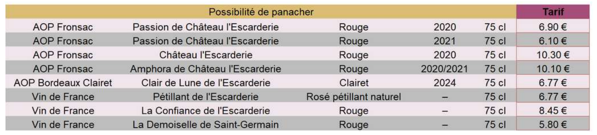
data/catalogue.json| Appellation | Cuvée | Couleur | Millésime | Contenance | Tarif | |
|---|---|---|---|---|---|---|
| AOP Fronsac | Passion de Château l'Escarderie | Rouge | 2020 | 75 cl | 6,90 € | |
| AOP Fronsac | Passion de Château l'Escarderie | Rouge | 2021 | 75 cl | 6,10 € | |
| AOP Fronsac | Château l'Escarderie | Rouge | 2020 | 75 cl | 10,30 € | |
| AOP Fronsac | Amphora de Château l'Escarderie | Rouge | 2020/2021 | 75 cl | 10,10 € | |
| AOP Bordeaux Clairet | Clair de Lune de l'Escarderie | Clairet | 2024 | 75 cl | 6,77 € | |
| Vin de France | Pétillant de l'Escarderie | Rosé pétillant naturel | — | 75 cl | 6,77 € | |
| Vin de France | La Confiance de l'Escarderie | Rouge | — | 75 cl | 8,45 € | |
| Vin de France | La Demoiselle de Saint-Germain | Rouge | — | 75 cl | 5,80 € |
* Prix de la bouteille H.T. départ, franco à partir de 180 bouteilles.
Départements : 35, 44, 49, 53, 56, 85
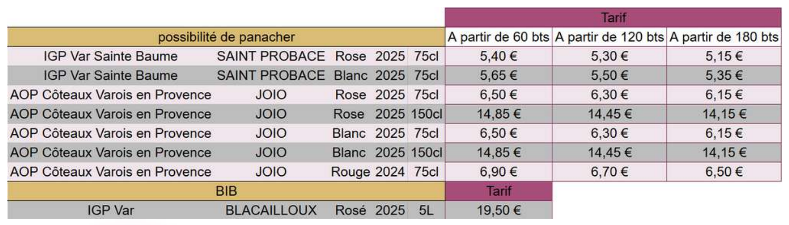
data/catalogue.json| Appellation | Cuvée | Couleur | Millésime | Contenance | À partir de 60 bts | À partir de 120 bts | À partir de 180 bts | |
|---|---|---|---|---|---|---|---|---|
| IGP Var Sainte Baume | SAINT PROBACE | Rosé | 2025 | 75 cl | 5,40 € | 5,30 € | 5,15 € | |
| IGP Var Sainte Baume | SAINT PROBACE | Blanc | 2025 | 75 cl | 5,65 € | 5,50 € | 5,35 € | |
| AOP Coteaux Varois en Provence | JOIO | Rosé | 2025 | 75 cl | 6,50 € | 6,30 € | 6,15 € | |
| AOP Coteaux Varois en Provence | JOIO | Rosé | 2025 | 150 cl | 14,85 € | 14,45 € | 14,15 € | |
| AOP Coteaux Varois en Provence | JOIO | Blanc | 2025 | 75 cl | 6,50 € | 6,30 € | 6,15 € | |
| AOP Coteaux Varois en Provence | JOIO | Blanc | 2025 | 150 cl | 14,85 € | 14,45 € | 14,15 € | |
| AOP Coteaux Varois en Provence | JOIO | Rouge | 2024 | 75 cl | 6,90 € | 6,70 € | 6,50 € |
| Appellation | Cuvée | Couleur | Millésime | Contenance | Tarif | |
|---|---|---|---|---|---|---|
| IGP Var | BLACAILLOUX | Rosé | 2025 | 5 L | 19,50 € |
* Prix de la bouteille H.T. franco de port.
Départements : 35, 44, 49, 56, 85
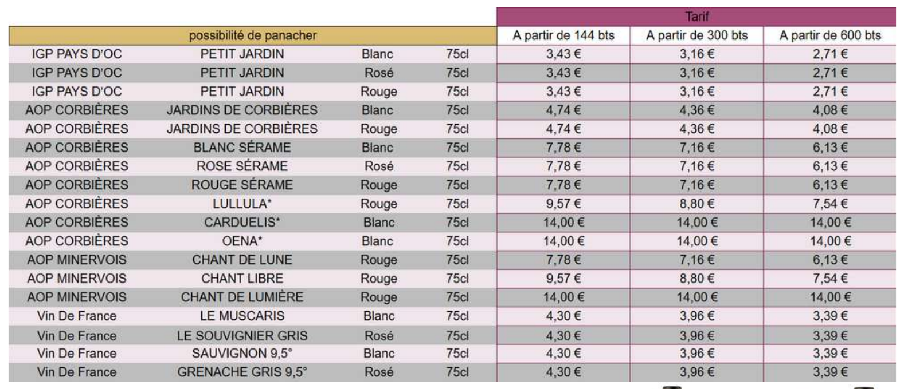
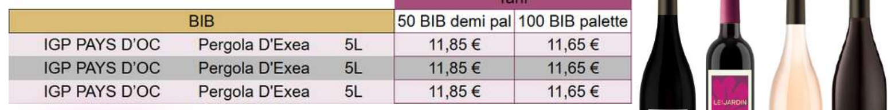
data/catalogue.json| Appellation | Cuvée | Couleur | Millésime | Contenance | À partir de 144 bts | À partir de 300 bts | À partir de 600 bts | |
|---|---|---|---|---|---|---|---|---|
| IGP Pays d'Oc | PETIT JARDIN | Blanc | — | 75 cl | 3,43 € | 3,16 € | 2,71 € | |
| IGP Pays d'Oc | PETIT JARDIN | Rosé | — | 75 cl | 3,43 € | 3,16 € | 2,71 € | |
| IGP Pays d'Oc | PETIT JARDIN | Rouge | — | 75 cl | 3,43 € | 3,16 € | 2,71 € | |
| AOP Corbières | JARDINS DE CORBIÈRES | Blanc | — | 75 cl | 4,74 € | 4,36 € | 4,08 € | |
| AOP Corbières | JARDINS DE CORBIÈRES | Rouge | — | 75 cl | 4,74 € | 4,36 € | 4,08 € | |
| AOP Corbières | BLANC SÉRAME | Blanc | — | 75 cl | 7,78 € | 7,16 € | 6,13 € | |
| AOP Corbières | ROSE SÉRAME | Rosé | — | 75 cl | 7,78 € | 7,16 € | 6,13 € | |
| AOP Corbières | ROUGE SÉRAME | Rouge | — | 75 cl | 7,78 € | 7,16 € | 6,13 € | |
| AOP Corbières | LULLULA | Rouge | — | 75 cl | 9,57 € | 8,80 € | 7,54 € | ● |
| AOP Corbières | CARDUELIS | Blanc | — | 75 cl | 14,00 € | 14,00 € | 14,00 € | ● |
| AOP Corbières | OENA | Blanc | — | 75 cl | 14,00 € | 14,00 € | 14,00 € | ● |
| AOP Minervois | CHANT DE LUNE | Rouge | — | 75 cl | 7,78 € | 7,16 € | 6,13 € | |
| AOP Minervois | CHANT LIBRE | Rouge | — | 75 cl | 9,57 € | 8,80 € | 7,54 € | |
| AOP Minervois | CHANT DE LUMIÈRE | Rouge | — | 75 cl | 14,00 € | 14,00 € | 14,00 € | |
| Vin de France | LE MUSCARIS | Blanc | — | 75 cl | 4,30 € | 3,96 € | 3,39 € | |
| Vin de France | LE SOUVIGNIER GRIS | Rosé | — | 75 cl | 4,30 € | 3,96 € | 3,39 € | |
| Vin de France | SAUVIGNON 9,5° | Blanc | — | 75 cl | 4,30 € | 3,96 € | 3,39 € | |
| Vin de France | GRENACHE GRIS 9,5° | Rosé | — | 75 cl | 4,30 € | 3,96 € | 3,39 € |
| Appellation | Cuvée | Contenance | 50 BIB demi pal | 100 BIB palette | |
|---|---|---|---|---|---|
| IGP Pays d'Oc | Pergola D'Exea | 5 L | 11,85 € | 11,65 € | ● |
| IGP Pays d'Oc | Pergola D'Exea | 5 L | 11,85 € | 11,65 € | ● |
| IGP Pays d'Oc | Pergola D'Exea | 5 L | 11,85 € | 11,65 € | ● |
Franco de port à partir de 72 bouteilles
Départements : 35, 44, 49, 53, 85
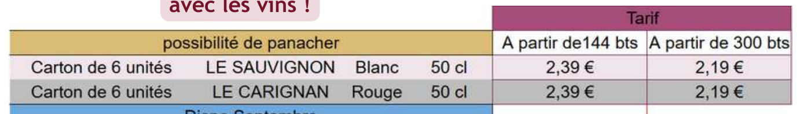
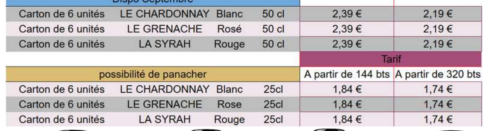
data/catalogue.json| Appellation | Cuvée | Couleur | Contenance | À partir de 144 bts | À partir de 300 bts | |
|---|---|---|---|---|---|---|
| Carton de 6 unités | LE SAUVIGNON | Blanc | 50 cl | 2,39 € | 2,19 € | |
| Carton de 6 unités | LE CARIGNAN | Rouge | 50 cl | 2,39 € | 2,19 € | |
| Carton de 6 unités | LE CHARDONNAY | Blanc | 50 cl | 2,39 € | 2,19 € | ● |
| Carton de 6 unités | LE GRENACHE | Rosé | 50 cl | 2,39 € | 2,19 € | ● |
| Carton de 6 unités | LA SYRAH | Rouge | 50 cl | 2,39 € | 2,19 € | ● |
| Appellation | Cuvée | Couleur | Contenance | À partir de 144 bts | À partir de 320 bts | |
|---|---|---|---|---|---|---|
| Carton de 6 unités | LE CHARDONNAY | Blanc | 25 cl | 1,84 € | 1,74 € | |
| Carton de 6 unités | LE GRENACHE | Rosé | 25 cl | 1,84 € | 1,74 € | |
| Carton de 6 unités | LA SYRAH | Rouge | 25 cl | 1,84 € | 1,74 € |
Franco de port à partir de 72 bouteilles
Départements : 35, 44, 49, 53, 85
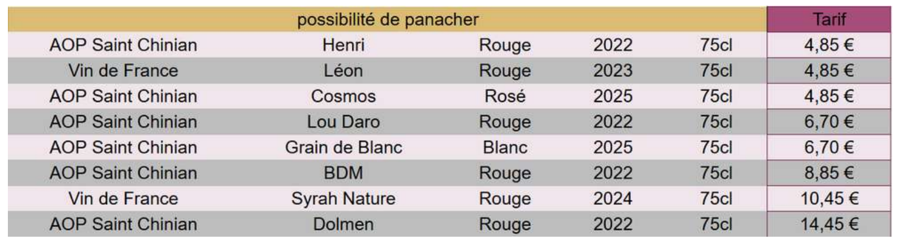
data/catalogue.json| Appellation | Cuvée | Couleur | Millésime | Contenance | Tarif | |
|---|---|---|---|---|---|---|
| AOP Saint Chinian | Henri | Rouge | 2022 | 75 cl | 4,85 € | |
| Vin de France | Léon | Rouge | 2023 | 75 cl | 4,85 € | |
| AOP Saint Chinian | Cosmos | Rosé | 2025 | 75 cl | 4,85 € | |
| AOP Saint Chinian | Lou Daro | Rouge | 2022 | 75 cl | 6,70 € | |
| AOP Saint Chinian | Grain de Blanc | Blanc | 2025 | 75 cl | 6,70 € | |
| AOP Saint Chinian | BDM | Rouge | 2022 | 75 cl | 8,85 € | |
| Vin de France | Syrah Nature | Rouge | 2024 | 75 cl | 10,45 € | |
| AOP Saint Chinian | Dolmen | Rouge | 2022 | 75 cl | 14,45 € |
* Prix de la bouteille H.T. franco de port à partir de 180 bouteilles.
Départements : 35, 44, 49, 53, 56, 85
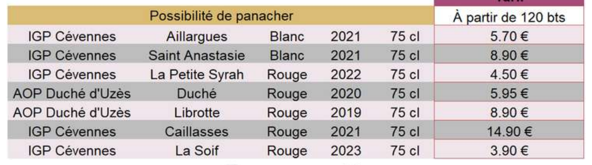
data/catalogue.json| Appellation | Cuvée | Couleur | Millésime | Contenance | À partir de 120 bts | |
|---|---|---|---|---|---|---|
| IGP Cévennes | Aillargues | Blanc | 2021 | 75 cl | 5,70 € | |
| IGP Cévennes | Saint Anastasie | Blanc | 2021 | 75 cl | 8,90 € | |
| IGP Cévennes | La Petite Syrah | Rouge | 2022 | 75 cl | 4,50 € | |
| AOP Duché d'Uzès | Duché | Rouge | 2020 | 75 cl | 5,95 € | |
| AOP Duché d'Uzès | Librotte | Rouge | 2019 | 75 cl | 8,90 € | |
| IGP Cévennes | Caillasses | Rouge | 2021 | 75 cl | 14,90 € | |
| IGP Cévennes | La Soif | Rouge | 2023 | 75 cl | 3,90 € |
* Prix de la bouteille H.T. hors frais de transport.
Départements : 35, 44, 49, 53, 56, 85
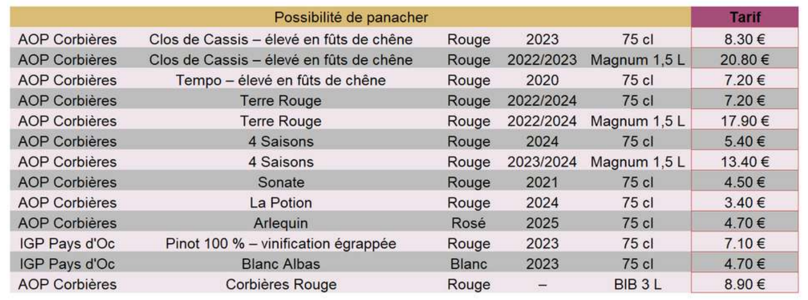
data/catalogue.json| Appellation | Cuvée | Couleur | Millésime | Contenance | Tarif | |
|---|---|---|---|---|---|---|
| AOP Corbières | Clos de Cassis – élevé en fûts de chêne | Rouge | 2023 | 75 cl | 8,30 € | |
| AOP Corbières | Clos de Cassis – élevé en fûts de chêne | Rouge | 2022/2023 | Magnum 1,5 L | 20,80 € | |
| AOP Corbières | Tempo – élevé en fûts de chêne | Rouge | 2020 | 75 cl | 7,20 € | |
| AOP Corbières | Terre Rouge | Rouge | 2022/2024 | 75 cl | 7,20 € | |
| AOP Corbières | Terre Rouge | Rouge | 2022/2024 | Magnum 1,5 L | 17,90 € | |
| AOP Corbières | 4 Saisons | Rouge | 2024 | 75 cl | 5,40 € | |
| AOP Corbières | 4 Saisons | Rouge | 2023/2024 | Magnum 1,5 L | 13,40 € | |
| AOP Corbières | Sonate | Rouge | 2021 | 75 cl | 4,50 € | |
| AOP Corbières | La Potion | Rouge | 2024 | 75 cl | 3,40 € | |
| AOP Corbières | Arlequin | Rosé | 2025 | 75 cl | 4,70 € | |
| IGP Pays d'Oc | Pinot 100 % – vinification égrappée | Rouge | 2023 | 75 cl | 7,10 € | |
| IGP Pays d'Oc | Blanc Albas | Blanc | 2023 | 75 cl | 4,70 € | |
| AOP Corbières | Corbières Rouge | Rouge | — | BIB 3 L | 8,90 € |
* Prix de la bouteille H.T. départ cave.
Départements : 35, 44, 49, 53, 56, 85
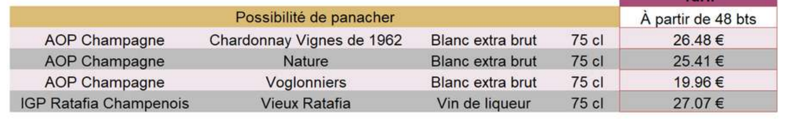
data/catalogue.json| Appellation | Cuvée | Couleur | Millésime | Contenance | À partir de 48 bts | |
|---|---|---|---|---|---|---|
| AOP Champagne | Chardonnay Vignes de 1962 | Blanc extra brut | — | 75 cl | 26,48 € | |
| AOP Champagne | Nature | Blanc extra brut | — | 75 cl | 25,41 € | |
| AOP Champagne | Voglonniers | Blanc extra brut | — | 75 cl | 19,96 € | ● |
| IGP Ratafia Champenois | Vieux Ratafia | Vin de liqueur | — | 75 cl | 27,07 € |
* Prix de la bouteille H.T. franco de port à partir de 48 bouteilles.
Départements : 44, 85
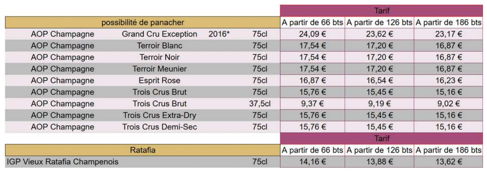
data/catalogue.json| Appellation | Cuvée | Millésime | Contenance | À partir de 66 bts | À partir de 126 bts | À partir de 186 bts | |
|---|---|---|---|---|---|---|---|
| AOP Champagne | Grand Cru Exception | 2016 | 75 cl | 24,09 € | 23,62 € | 23,17 € | ● |
| AOP Champagne | Terroir Blanc | — | 75 cl | 17,54 € | 17,20 € | 16,87 € | |
| AOP Champagne | Terroir Noir | — | 75 cl | 17,54 € | 17,20 € | 16,87 € | |
| AOP Champagne | Terroir Meunier | — | 75 cl | 17,54 € | 17,20 € | 16,87 € | |
| AOP Champagne | Esprit Rose | — | 75 cl | 16,87 € | 16,54 € | 16,23 € | |
| AOP Champagne | Trois Crus Brut | — | 75 cl | 15,76 € | 15,45 € | 15,16 € | |
| AOP Champagne | Trois Crus Brut | — | 37,5 cl | 9,37 € | 9,19 € | 9,02 € | |
| AOP Champagne | Trois Crus Extra-Dry | — | 75 cl | 15,76 € | 15,45 € | 15,16 € | |
| AOP Champagne | Trois Crus Demi-Sec | — | 75 cl | 15,76 € | 15,45 € | 15,16 € |
| Appellation | Millésime | Contenance | À partir de 66 bts | À partir de 126 bts | À partir de 186 bts | |
|---|---|---|---|---|---|---|
| IGP Vieux Ratafia Champenois | — | 75 cl | 14,16 € | 13,88 € | 13,62 € |
* Prix de la bouteille H.T. franco de port.
Départements : 35, 44, 49, 53, 56, 85
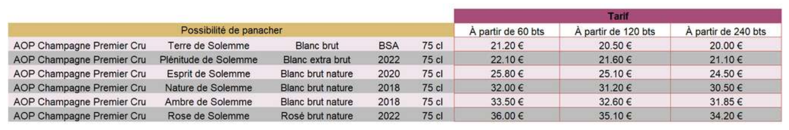
data/catalogue.json| Appellation | Cuvée | Couleur | Millésime | Contenance | À partir de 60 bts | À partir de 120 bts | À partir de 240 bts | |
|---|---|---|---|---|---|---|---|---|
| AOP Champagne Premier Cru | Terre de Solemme | Blanc brut | BSA | 75 cl | 21,20 € | 20,50 € | 20,00 € | |
| AOP Champagne Premier Cru | Plénitude de Solemme | Blanc extra brut | 2022 | 75 cl | 22,10 € | 21,60 € | 21,10 € | |
| AOP Champagne Premier Cru | Esprit de Solemme | Blanc brut nature | 2020 | 75 cl | 25,80 € | 25,10 € | 24,50 € | |
| AOP Champagne Premier Cru | Nature de Solemme | Blanc brut nature | 2018 | 75 cl | 32,00 € | 31,20 € | 30,50 € | |
| AOP Champagne Premier Cru | Ambre de Solemme | Blanc brut nature | 2018 | 75 cl | 33,50 € | 32,60 € | 31,85 € | |
| AOP Champagne Premier Cru | Rose de Solemme | Rosé brut nature | 2022 | 75 cl | 36,00 € | 35,10 € | 34,20 € |
* Prix de la bouteille H.T. franco de port.
Départements : 35, 44, 49, 53, 56, 85
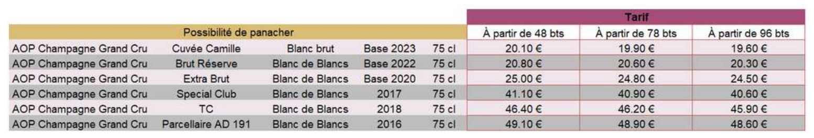
data/catalogue.json| Appellation | Cuvée | Couleur | Millésime | Contenance | À partir de 48 bts | À partir de 78 bts | À partir de 96 bts | |
|---|---|---|---|---|---|---|---|---|
| AOP Champagne Grand Cru | Cuvée Camille | Blanc brut | Base 2023 | 75 cl | 20,10 € | 19,90 € | 19,60 € | |
| AOP Champagne Grand Cru | Brut Réserve | Blanc de Blancs | Base 2022 | 75 cl | 20,80 € | 20,60 € | 20,30 € | |
| AOP Champagne Grand Cru | Extra Brut | Blanc de Blancs | Base 2020 | 75 cl | 25,00 € | 24,80 € | 24,50 € | |
| AOP Champagne Grand Cru | Special Club | Blanc de Blancs | 2017 | 75 cl | 41,10 € | 40,90 € | 40,60 € | |
| AOP Champagne Grand Cru | TC | Blanc de Blancs | 2018 | 75 cl | 46,40 € | 46,20 € | 45,90 € | |
| AOP Champagne Grand Cru | Parcellaire AD 191 | Blanc de Blancs | 2016 | 75 cl | 49,10 € | 48,90 € | 48,60 € |
* Prix de la bouteille H.T. franco de port.
Départements : 35, 44, 49, 53, 56, 85